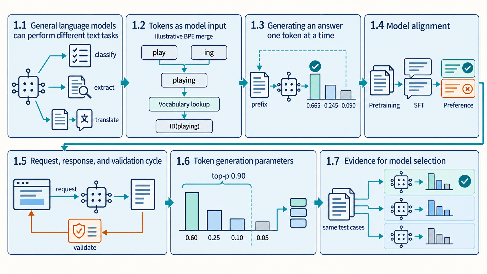
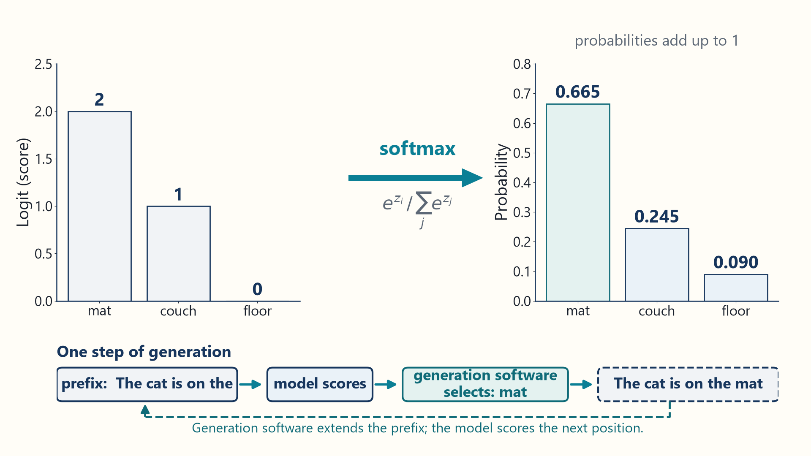
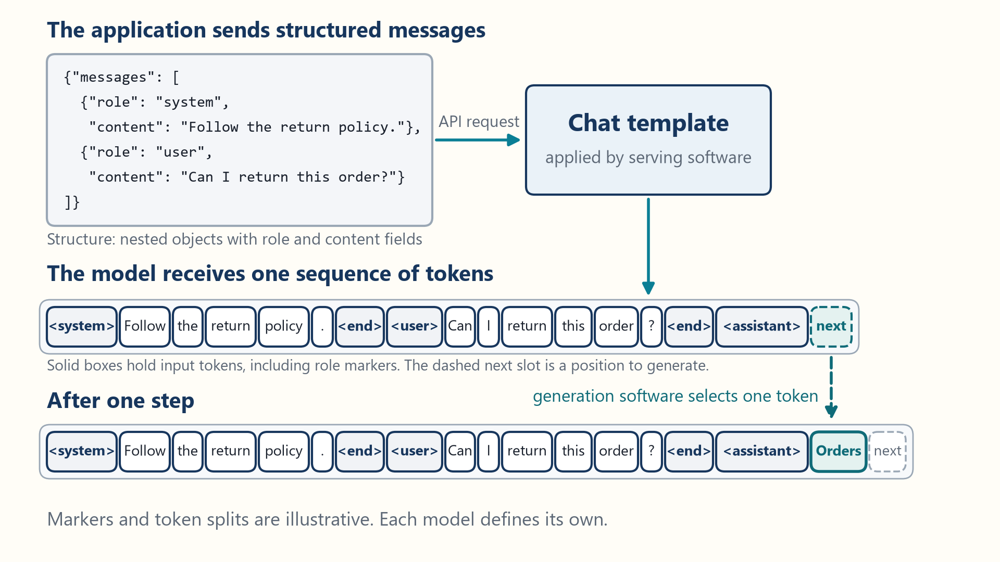
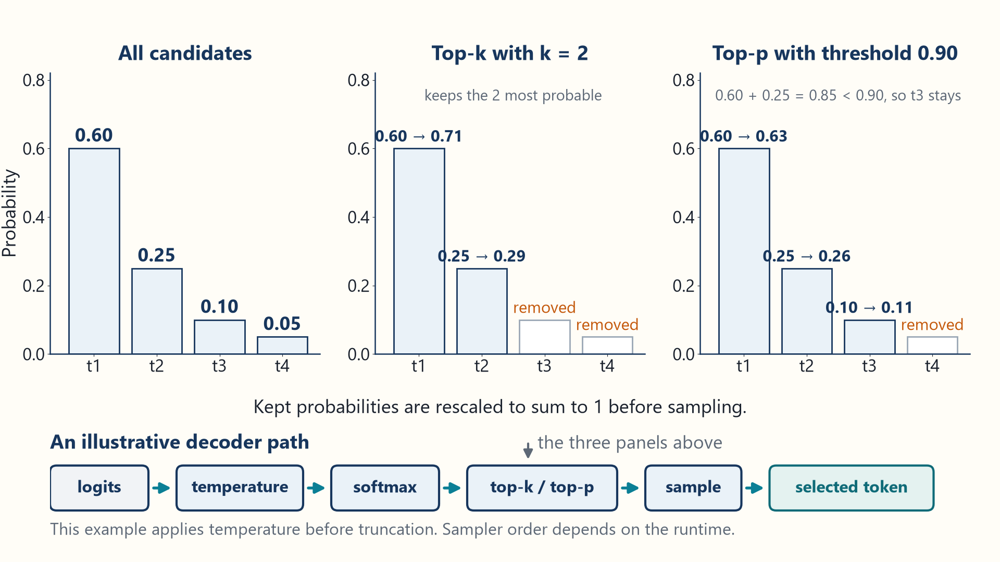

1 Language models as application components
Before a language model can process a text request, software divides it into pieces and assigns each an integer ID. Each piece, called a token, may be a word, part of a word, or punctuation mark. The model converts each ID into a vector, a list of numbers used to represent that token. Common strings often need fewer tokens than character-by-character input; rare strings may need more. To generate a response, the model predicts one token at a time.
Application software prepares structured requests from user input and relevant data, sends them to the model, checks its response, and controls any next action. Data retrieval and action execution happen in the application or in services it calls.
At each generation step, the model produces a probability distribution over the next token, and training sets the stored values that shape that distribution. Following a request as it moves from text to tokens, through generation, and back to application code shows where instructions, training, and software checks each affect the result.
Three operating modes recur throughout the book. During inference, a trained model receives a request and generates output while each learned parameter, a number stored in the model, stays fixed. During training, software compares predictions with example targets or preferences and updates those parameters. During evaluation, software sends test cases, compares the outputs with reference answers or stated criteria, and records measurements without updating the model. A case is held out when it was kept separate from examples used to train or tune the version being tested. Evaluation also takes place during development, where its results can guide later changes.

The map follows the seven sections in reading order, from what a general model can do and how text becomes tokens, through generation, alignment, and the request cycle, to generation settings and evidence for choosing a model.
1.1 General language models can perform different text tasks
Many earlier language systems were trained for one job: one classifier might label reviews as positive or negative, while another system extracted names from documents. Adapting them to a different task usually required task-specific training data. A general language model can instead attempt different tasks using the same trained model. A prompt is the input text that describes the task and can include instructions, examples, or both.
A neural network processes numeric input through connected layers of calculations whose learned parameters affect the result. A transformer is a neural-network design in which attention lets each token representation combine information from other positions. In continuation generation, attention at a position uses that position and earlier positions, not later text.1 Repeating attention and transformation layers produces the final token scores described in Section 1.3. In Language Models Are Few-Shot Learners2, Brown et al. tested GPT-3 (Generative Pre-trained Transformer 3), a large language model introduced in 2020, on tasks such as translation and question answering. They changed the instructions and examples supplied as text without retraining the model for each task. Their results showed both useful task transfer and important failures, so this flexibility still has to be tested on an application’s own inputs.
A large language model (LLM) is a model trained to process and generate language. A foundation model is trained on broad data and can be adapted to many later tasks. The Stanford CRFM report gives BERT, GPT-3, and CLIP as examples. CLIP works with images and text. These examples handle different data but share broad training and downstream adaptation.3
The same LLM may classify, extract, summarize, translate, or generate code. A bare model call does not fetch current facts, retain earlier calls, decide whether a user has permission, or verify an important answer. Surrounding services can add retrieval, stored state, tools, and checks, while application code remains responsible for deciding how those capabilities are used. The NIST Generative AI Profile4 gives guidance on governance, measurement, data, content, and security across the system lifecycle.
The same model can extract information into fields that the application checks or generate requests for operations that affect external systems. Application code determines what evidence the model receives, which outputs it validates, and whether an external action is permitted. Model behavior and the operating environment remain additional sources of risk.
Machine learning trains models from data to perform tasks. It is one approach within AI. Deep learning is machine learning based on neural networks with multiple layers.5 A transformer is one deep-learning architecture. “LLM” describes a model’s focus on language. “Foundation model” describes broad training intended to support reuse across tasks. The labels describe different aspects of a model, not levels on one scale. ISO describes ML-based AI systems through their components and functions.6
An agent harness is runtime software that coordinates a model’s use of approved tools. It carries out the model/tool exchange. Some products also use this term for session support.7 Chapters 8 and 9 distinguish the runtime from the surrounding application and the place where code runs.
Some of the checks that application code applies are safety guardrails. A safety guardrail is a rule or validation step that limits unsafe inputs, disclosures, tool calls, or changes to stored data. For example, application code can reject a request for records the caller cannot access before sending any text to the model. It can also reject a tool call whose arguments exceed the caller’s permissions. Section 8.7 develops the input, output, tool, and state checks that enforce these limits.
At the model level, task behavior can change through the prompt or by loading a different saved model version:
In-context learning: Using instructions or examples in the prompt sent for a task to influence the model’s response. The model’s learned parameters stay the same.
Checkpoint: A saved model version containing a particular set of parameters and its associated configuration. Loading another checkpoint changes the model used for inference even when the application sends the same request.
1.2 Tokens as model input
A tokenizer splits readable text into pieces and maps each piece to an integer ID. The vocabulary is the fixed list of text pieces and IDs used by the model. A token’s embedding is its learned numeric vector. The model looks up that vector in a table using the token ID and processes it through the neural network. Token counts affect request cost, context capacity, and how code, spelling variants, and other languages are represented.
Modern LLMs commonly use subword tokenization. A subword token can represent a whole common string, which often uses fewer units than character-by-character encoding. Rare words, punctuation, code, and some languages may split into several tokens. The same visible text can produce different counts across models.
One way to build subword pieces is byte-pair encoding (BPE). It starts with small units and repeatedly merges the pair that occurs most often in the training text. Sennrich, Haddow, and Birch8 used this subword method in neural machine translation and reported improvements on their tested translation tasks. For a toy set of pieces, frequent neighbors play and ing might become the single token playing. The real merge list is learned from a large corpus, so this example explains the idea rather than the exact pieces any provider uses.
Other subword methods make different choices about which pieces become tokens. Vocabulary entries may represent whole words, fragments, punctuation, bytes, or other units. The Hugging Face Tokenizers documentation9 describes WordPiece, which takes the longest matching entries from left to right, and Unigram, which scores possible splits and selects a likely one. The model must use the tokenizer and vocabulary it was trained with. A different tokenizer gives the model a different token sequence.
Since a token may contain only part of a string, exact character counts, spelling, and unusual separators do not map directly to token counts.
For a chat request, the application assigns each message a role, such as system, user, or assistant. A chat template converts these messages into the control tokens and text expected by the selected model.10 The message-to-token trace in Model alignment shows the complete conversion. Token counting needs the selected model and endpoint, together with the complete message request. The context window is the token capacity for that serialized request and, for APIs with a shared limit, its generated output.
Estimate the length of the request the model receives
To estimate cost or avoid a context-window limit:
- Build the complete request, including the chat-role markers, system message, history, retrieved text, tool descriptions, and room for the answer.
- Count that request with the selected model’s tokenizer and chat template when they are available.
- When a hosted provider does not publish them, use its token-counting endpoint, if available, or the usage it returns for a test request.
A word count is only a rough guess. It can be badly wrong for code, URLs, Hebrew, Chinese, unusual whitespace, or a different provider’s tokenizer. When the selected API defines capacity and billing in tokens, the budget must use the same tokenizer and accounting rules. Other services may also charge for requests, time, cached input, images, audio, or tool use.
Providers often charge one rate for input tokens and another for generated tokens. Count them separately before adding the two charges.
\[ C=r_{\mathrm{in}}N_{\mathrm{in}}+r_{\mathrm{out}}N_{\mathrm{out}} \tag{1.1}\]
\(N_{\mathrm{in}}\) and \(N_{\mathrm{out}}\) are the input and output token counts. \(r_{\mathrm{in}}\) and \(r_{\mathrm{out}}\) are their respective prices per token, so \(C\) is the charge for one call in the same currency. Divide a quoted price per million tokens by one million before using it as a rate in this formula. Multiply each count by its rate, then add the charges. Discounts, batch pricing, tool calls, evaluation calls, and infrastructure affect the cost of the full workflow.
Example 1.1: Token cost for one million requests
Assume each turn makes one model request using 1,800 input tokens and 300 output tokens. Input costs $0.20 per million tokens and output costs $0.80 per million tokens.
- Input cost per turn is 1,800 / 1,000,000 x $0.20 = $0.00036.
- Output cost per turn is 300 / 1,000,000 x $0.80 = $0.00024.
- Total cost per turn is $0.00060, so one million turns cost about $600 before retries, retrieval, or tool calls.
Result: Output makes up about 14% of the tokens but contributes 40% of the token bill.
Interpretation: Small per-turn charges become material at production scale. The full process must be measured because retries and extra model calls used to score answers add cost.
1.3 Generating an answer one token at a time
After tokenization, the model receives a sequence of token identifiers. Position information lets the transformer use token order as well as token content. The tokens already present form the prefix. At each generation step, the model computes one score, called a logit, for every token in its vocabulary. A logit can be positive or negative and has no fixed range.
To turn these scores into next-token probabilities, softmax first raises the number e (approximately 2.718) to each score, producing a positive weight. Exponentiation preserves the order of the scores while turning their differences into positive ratios. Softmax then divides each weight by the sum of all the weights. The resulting probabilities add up to 1 across all tokens in the vocabulary.11 They describe the model’s prediction of which token comes next. Suppose the prefix is The cat is on the and a toy vocabulary contains three candidates, mat, couch, and floor. Their scores of 2, 1, and 0 become probabilities of about 0.665, 0.245, and 0.090.
The generation software then chooses a token. Greedy selection takes a token with the highest probability. Sampling draws a token at random according to the candidate probabilities. More probable tokens are drawn more often, but a lower-probability token can still be selected. This selection procedure is called a decoding strategy. The chosen token is added to the prefix, and the model computes scores for the next position. Generation stops at an end token, a specified stop sequence, an output limit set by the application or service, or the end of the context window.
The probability assigned to a complete token sequence is the product of the conditional probabilities assigned at each position.
\[ P(x_{1:T} \mid c) = \prod_{t=1}^{T} P(x_t \mid c, x_{<t}) \tag{1.2}\]
Here, \(c\) is the input context, \(T\) is the number of generated tokens, \(x_t\) is the token at position \(t\), and \(x_{<t}\) means the generated tokens before that position. The product runs over positions 1 through \(T\). Each term conditions on the same input context and all earlier generated tokens. Their product is the probability of that particular continuation under the model. It predicts text, not whether the resulting answer is true or useful.
Example 1.2: Probability of a three-token continuation
Suppose the model assigns probabilities 0.50, 0.40, and 0.25 to the selected tokens at three successive positions.
- Multiply the first two conditional probabilities: 0.50 × 0.40 = 0.20.
- Include the third conditional probability: 0.20 × 0.25 = 0.05.
Result: The complete three-token continuation has probability 0.05 under this model and prefix.
Interpretation: A fluent sequence can still have small total probability because every additional token contributes another factor.
The softmax figure applies the calculation to the toy scores. Its bars show the probabilities of the candidate tokens.

Once a token is selected, it becomes part of the next prefix. Later predictions use that extended prefix, so an early choice can change the rest of the response.
This repeated prediction loop can produce fluent text, but a useful assistant must also respond to instructions and keep system, user, and assistant roles distinct. Further training makes those response patterns more likely. Request formatting then identifies the role the model should continue for the current request.
1.4 Model alignment
During pretraining, software updates a model’s parameters to improve its continuation of text that resembles the training data. An AI assistant has a more specific task. It should respond to a user’s request in the assistant role while following higher-priority instructions supplied by the application. Pretraining alone does not establish those expectations.
Model alignment is the process of making a model’s behavior better match intended instructions, preferences, or safety criteria in specified situations. This section focuses on alignment training, which adjusts the model’s parameters through further training. During later inference, the aligned model still uses the next-token loop from Section 1.3. Alignment changes the probabilities learned by the model. It does not add a separate answering engine or make every answer correct.
A base model mainly predicts tokens from patterns learned in broad text. If its prompt ends with Translate hello, it might continue with another translation exercise instead of translating the word. The continuation can fit the text pattern without serving the user’s intention.
Supervised Fine-Tuning (SFT) supplies prompts together with suitable responses. At each response position, training compares the model’s predicted token probabilities with the target token and updates the parameters to make the target response more likely. Across many examples, the model learns patterns such as answering a request directly, following an output format, and continuing in the assistant role.
Preference training addresses cases where several responses are fluent but differ in usefulness, safety, or style. Evaluators compare responses to the same prompt using stated criteria. In a common reinforcement learning from human feedback (RLHF) setup, demonstrations first train an initial model. The comparisons then train a reward model, a learned scorer that assigns a score to a candidate response in its prompt context. Reinforcement learning updates the initial model to make responses with higher reward-model scores more likely.12 The paper Direct Preference Optimization: Your Language Model Is Secretly a Reward Model13 introduces Direct Preference Optimization (DPO). DPO trains directly on preferred and rejected response pairs, without fitting that separate reward model or running reinforcement-learning optimization. In both cases, the comparison criteria and training data determine which behaviors become more likely.
An instruct model responds to instructions after further training on that behavior. A chat model responds to role-marked conversational turns after training on that structure. These labels describe useful differences in expected behavior. They do not require every provider to use the same training stages.
The alignment methods described above act during training. A chat template acts later, when software serves a request. The application sends separate system, user, and assistant messages as structured data. The serving software applies the template, which converts those messages into the control tokens and text expected by that model. With a hosted API, the provider’s service applies it. Code that calls a tokenizer library directly applies it itself. The model receives one formatted token sequence, not a collection of message objects. A template can end the request with a marker that places the next token after an assistant-role pattern encountered during training. The exact markers depend on the model.
The chat-template figure below follows the structured messages into the token sequence used for generation.

A wrong template can merge or mislabel roles even when the application’s message objects look correct. The model then receives a different token sequence from the one the application intended.
From continuation to assistant reply
Application messages: system: Follow the return policy. Then user: Can I return this order?
Illustrative formatted prefix: <system> Follow the return policy. <end> <user> Can I return this order? <end> <assistant>
Generation: The first token selected after <assistant> is the next token in the sequence. For a model that does not first generate hidden reasoning, it is also the first token of the reply the application shows.
The assistant marker only selects a position for the existing next-token process. The template preserves role boundaries in the input, but it does not enforce permissions, identify false claims, or prevent the model from following instructions embedded in untrusted text.
Alignment can improve measured instruction following, safety, and usability. It can also cause false refusals or reduce performance on other tasks. Evaluation on the intended cases shows whether the new behavior meets the stated criteria.
Alignment changes which answers are likely. Whether an answer follows from the available information is a reasoning question. Reasoning means using available information through one or more intermediate steps to reach a conclusion. In an LLM system, reasoning can refer to three different kinds of work:
- Internal model computation. The model’s operations produce intermediate numeric values inside the model and token scores. These values affect the output, but they are not a readable explanation or proof.
- Generated intermediate steps. The model can generate tokens before its final answer. A provider may display, hide, or summarize this sequence and may count a hidden portion as reasoning tokens. These generated tokens are different from the intermediate numeric values inside the model, and they can contain mistakes.14
- Application-managed stages. Software can add records returned by retrieval or tools. It can then include user corrections, validate a result, and make another model call. These stages can supply evidence and checks that were absent from the first request.
Chain-of-thought prompting asks a model to generate intermediate steps as text before its final answer. In the cited research, this method improved accuracy on some arithmetic, commonsense, and symbolic tasks.15 Experiments have also shown cases in which a plausible step-by-step explanation omitted a factor that influenced the answer or justified an incorrect result.16 A displayed explanation needs the same evidence and result checks as a direct answer.
Suppose a return policy allows returns within 30 days and the order record shows a purchase 18 days ago. The model can combine those facts and conclude that the order is within the return window. A final-sale rule could change that result, so the application should check important conclusions against the relevant policy and order record.
The application supplies conversation state
A bare stateless model call does not retain previous calls. On the next turn, the application must resend selected history or retrieve state stored by a surrounding service.
For a chat request, the application sends the selected messages to the model service through its API.
1.5 Request, response, and validation cycle
For each request to a model-service API, the application supplies a model identifier and the request data. It also configures token selection and rules for the returned format. These settings control which model runs, what information it receives, how it selects tokens, and how the application checks the result.
The model field selects the provider’s model identifier. Depending on the provider, that identifier can refer to a fixed checkpoint. It may instead refer to a provider-managed alias or a deployment. This choice affects capability, tokenizer, context capacity, and provider-specific behavior. Price and latency also depend on the endpoint, region, hardware, batching, service tier, current load, and commercial terms. The messages or input field supplies policy, user data, history, and evidence. Decoding fields control token selection. Output-schema settings let the provider or the application check that the returned data has the required fields and types.
Each field changes a different aspect of execution. Changing the model alters capability and cost. Changing messages updates evidence. Temperature shifts selection probabilities, while a small output limit can cut off an otherwise valid answer.
| Field or layer | Who sets it, and who applies or checks it | Changes | What it cannot guarantee |
|---|---|---|---|
| Model checkpoint | Application selects the identifier. The provider or self-hosted runtime resolves and serves the checkpoint | Capability, tokenizer, latency, cost, context capacity | Success on the inputs the application receives |
| Messages and context | Application | Instructions, evidence, state, examples, available tools | That the model will use every supplied fact correctly |
| Decoding controls | Application sets them. The inference API or runtime applies them | How probabilities become selected tokens | Factuality, safety, or deterministic semantics |
| Schema and validator | API plus application | Output syntax and accepted fields | That field values are supported by evidence |
Streaming changes when the application receives the output, not how the model chooses its next token. In OpenAI’s Responses API, the application receives a sequence of events labeled by kind while generation continues, instead of waiting for a complete response. A text-delta event adds another piece of output text. The API does not define this as a one-event-per-model-token interface.17 A partial sentence or incomplete JSON object remains provisional. The application should wait for the required completion event and validation before accepting a structured result or allowing an external action.
Mid-response steering supplies additional user input while the model is generating a response. Streaming alone does not provide this control. With an ordinary request interface, the application can stop or ignore the active response. It then appends the new message to conversation state and begins another call. A provider can also implement direct steering. As a dated example, OpenAI18 documents a WebSocket operation for its GPT-6 model family that queues the added input and automatically creates a continuation, unless the response needs a tool result or approval from the application. It does not rewrite output already delivered, undo earlier actions, or cancel tools that have started.
Product interfaces sometimes call this steering while the model is thinking. The update changes the input for later computation. It does not edit a hidden reasoning trace.
A streamed answer changes direction
1. A customer asks an AI assistant, “Can I return this order?”
2. The model begins generating a general answer. The application displays the partial text: Orders within 30 days can usually...
3. Before the response finishes, the customer adds, “The item was marked final sale.”
4. The application records that message. With an ordinary request interface, it stops or ignores the first response and starts another call with the updated conversation. With supported direct steering, it submits the update and continues reading provider events. The provider may finish the current output item before the continuation begins.
5. The customer’s statement that the item was marked final sale is new input. A later statement such as This order is not eligible for return would be a conclusion derived from the supplied facts. The application still needs the applicable policy and a verified order record before accepting that conclusion.
Conclusion: Steering changes subsequent work. A partial answer still needs the full checks before it becomes a decision.
Streaming and steering govern one interaction. A separate system choice is where the model runs and which organization operates it. A direct proprietary API reduces serving work, but it sends data to a vendor and creates rate-limit, pricing, and version dependencies. A managed platform adds catalogue and deployment controls. Here, open weights means trained parameter files made available for download and use under their license. Self-hosting them can increase control over data location, retention, and customization. Privacy still depends on configuration, access control, logging, patching, and daily operations. The organization must also plan capacity, manage upgrades, enforce security, and maintain reliability.
Comparing access paths with the same task cases
A fair comparison uses the same evaluation cases and output requirements for a direct provider API, a managed platform, and self-hosted model weights. It measures answer quality, latency, data location, service work, and total cost.
Open weights can improve privacy and customization, but they do not remove licensing obligations, security responsibilities, hardware expenses, or potential model-quality gaps. A low token price can still cost more once capacity planning and reliability work are included.
An OpenAI-compatible client can send requests to Nebius Token Factory, the service formerly named Nebius AI Studio.19 Its result record can include the provider configuration, model identifier, token counts, and latency. The endpoint and model below are dated examples. Production use depends on current provider documentation.
See Example 1.3 for the implementation.
Example 1.3: A Nebius Token Factory call records token usage and elapsed time.
This short Python client uses the openai package’s Chat Completions interface. It waits for one complete response and does not implement streaming, interruption, or steering. It assumes model_id, system_instructions, and user_request are supplied by the application, and that the environment contains a valid credential. The result is a dictionary containing the requested and served model identifiers, returned text, finish reason, decoding settings, token counts, and elapsed milliseconds. The client uses max_retries=0, so it does not hide retry waits in this measurement. The caller must handle authentication, rate-limit, timeout, missing-usage, and missing-text errors before accepting a record. A finish reason of length means the output limit cut the answer off.
This Nebius example uses max_tokens. An OpenAI-compatible endpoint does not ensure that every model accepts the same generation fields. Production code must check support for temperature and the output-limit field.
from openai import OpenAI
import os
import time
client = OpenAI(
base_url="https://api.tokenfactory.nebius.com/v1/",
api_key=os.environ["NEBIUS_API_KEY"],
max_retries=0,
)
started = time.perf_counter()
response = client.chat.completions.create(
model=model_id,
messages=[
{"role": "system", "content": system_instructions},
{"role": "user", "content": user_request},
],
temperature=0.2,
max_tokens=300,
)
text = response.choices[0].message.content
if not isinstance(text, str) or not text.strip():
raise ValueError("The model returned no answer text")
record = {
"provider": "Nebius Token Factory",
"base_url": str(client.base_url),
"model": model_id,
"served_model": response.model,
"finish_reason": response.choices[0].finish_reason,
"temperature": 0.2,
"max_tokens": 300,
"text": text,
"input_tokens": response.usage.prompt_tokens,
"output_tokens": response.usage.completion_tokens,
"latency_ms": 1000 * (time.perf_counter() - started),
}A repeatable evaluation run retains model_id, endpoint configuration, prompt versions, and returned usage. Build and release comparisons also depend on current official documentation for prices, model availability, usage-field meanings, retention behavior, and rate limits.
The example sets temperature=0.2. This changes how the system chooses from the model’s possible next tokens. The next section explains how that choice affects variation between answers.
1.6 Token generation parameters
Section 1.3 followed logits through softmax to a selected token. Generation parameters adjust this process. Temperature changes how concentrated the probabilities are, while top-k and top-p remove some candidates before sampling. The final selection rule then takes the most probable token or samples from the remaining distribution. These settings help explain why identical requests can produce different answers. Most chat APIs return the chosen text rather than the full score vector.
In the sequence explained here, temperature divides logits before softmax, then truncation selects candidates. Runtime ordering can differ. With unequal scores, lowering a positive temperature increases the total probability of the highest-scoring token or tied tokens and lowers that of the lowest-scoring token or tied tokens. A larger temperature spreads probability more widely. At temperature zero, runtimes normally use greedy or near-greedy selection rather than dividing by zero.
\[ p_i = \frac{\exp(z_i / \tau)}{\sum_{j=1}^{V} \exp(z_j / \tau)} \tag{1.3}\]
\(z_i\) is the logit for vocabulary item \(i\), \(\tau\) is the positive temperature, \(V\) is vocabulary size, and \(p_i\) is the resulting probability. The index \(j\) runs over all vocabulary entries. Dividing the logits by temperature changes the ratios between the positive weights, and dividing by their sum again makes the probabilities add up to one. This changes which continuations are likely, without adding evidence or verifying claims.
Example 1.4: Temperature changes a two-token choice
Use logits 2 and 1 for two candidate tokens.
- At temperature 1, exponentials are approximately 7.39 and 2.72, so the first token receives probability 7.39 / 10.11 = 0.73.
- At temperature 0.5, the scaled logits are 4 and 2. Exponentials are approximately 54.60 and 7.39, so the first token receives probability 0.88.
Result: Lower temperature increases concentration on the already higher-scored token.
Interpretation: Extraction and routing often benefit from low variation, while ideation may benefit from sampling. Task-specific evaluation results provide a better basis for the setting than a general preference for creativity or determinism.
Top-k keeps the k highest-probability tokens before sampling. Top-p sorts tokens by probability and keeps the smallest leading set whose total reaches the chosen threshold. The remaining probabilities are then rescaled to sum to one.20 Consider probabilities 0.60, 0.25, 0.10, and 0.05. Setting top-k with k = 2 retains two candidates. Setting top-p with threshold 0.90 retains three candidates, since 0.60 plus 0.25 totals only 0.85. Top-k fixes a candidate count, while top-p adjusts the count to the distribution.
The figure below compares top-k and top-p and places them in one example decoder sequence.

Temperature changes how concentrated the probabilities are, and truncation removes candidates. The final selection rule chooses what the user receives. Evaluating these controls needs representative task cases, not one plausible sample.
Even when the interface appears deterministic, the model, retrieval step, or tools can vary between runs. Repeated trials remain necessary whenever the complete system can vary.
Some APIs return token probability information when the selected model supports it and the request enables the option. A log-probability is the natural logarithm of a token’s probability: \(\ln(p)\) is the exponent \(a\) for which \(e^a=p\). For \(0<p<1\), this value is negative. An API may also list likely alternatives at each position. In OpenAI Chat Completions, logprobs: true requests these values and top_logprobs requests up to 20 alternatives per position. Its reference specifies -9999.0 for a token outside the top 20, rather than an exact log-probability. This placeholder must be excluded from probability conversions and sequence-score sums.21 Nebius Token Factory accepts the same two request fields. Its selected model’s support and returned-value rules need checking.22
A log-probability of \(-0.31\) corresponds to a probability of \(e^{-0.31} \approx 0.73\). The identity \(e^{a+b}=e^a e^b\) explains why log-probabilities add where probabilities multiply. For the three-token continuation in Section 1.3, the sum is \(\ln 0.50 + \ln 0.40 + \ln 0.25 \approx -3.00\), and \(e^{-3.00} \approx 0.05\).
Support differs by provider and model. A server may report probabilities before or after temperature and truncation, and vLLM reports the unadjusted values by default.23 The values describe the model’s prediction, not whether the output is correct. Section 5.1 checks them against labeled cases before using them as a confidence score.
Decoding settings apply to one request. The selected model, how the application accesses it, and its limits are larger choices that affect the whole application. Evidence from the intended task must determine those choices.
1.7 Evidence for model selection
Model type, how the application accesses the model, context capacity, and decoding settings affect different parts of the system. A leaderboard score cannot reveal whether one model fits its task, budget, data rules, and failure costs. The Holistic Evaluation of Language Models24 study, known as HELM, compared models across several scenarios and measurements and found trade-offs that a single aggregate score would hide. Even that broad evaluation does not represent one product’s users and operating constraints. Default and fallback choices depend on comparisons of checkpoints on representative tasks under those constraints.
A model-selection study defines the target behaviors, including extraction accuracy, citation fidelity, code execution success, latency, cost, privacy, and safety. A small representative evaluation can compare several checkpoints before extensive prompt tuning for one model. A stronger model may need less prompting, while a smaller model may be cheaper once the prompt and output are constrained.
- Capability fit: Does the model solve the intended task, including important slices (case subsets with their own scores, such as one language or request type)?
- Operational fit: Do latency, throughput, context capacity, rate limits, and reliability meet the service requirement?
- Data and legal fit: Are privacy, retention, data residency, model updates, and licensing acceptable?
- Economic fit: What is total workflow cost after retries, tool calls, retrieval, judge-model calls, and human review?
- Reversibility: Can the application switch checkpoints without rewriting state, prompts, schemas, and evaluations?
A selection study keeps the task set and output specification fixed while it compares checkpoints under realistic request settings. Error slices show whether a larger model reduces the need for detailed prompt guidance. Tests with retrieval or constrained decoding, which restricts token choices during generation to an allowed format, show whether a smaller model is adequate. This restriction differs from checking an already generated response. Section 2.4 explains the method and its limits. The decision then weighs any quality gain against added latency and cost. The right answer depends on the application because an unsupported answer, a slow response, and a false tool action have different costs in different products.
A model call predicts tokens from a supplied prefix. Chapter 2 turns that prefix into a repeatable task specification: instructions, examples, an output format, and checks the caller can apply.
Vaswani, A., Shazeer, N., Parmar, N., Uszkoreit, J., Jones, L., Gomez, A. N., Kaiser, Ł., & Polosukhin, I. (2017). Attention is all you need. In Advances in Neural Information Processing Systems 30. https://arxiv.org/abs/1706.03762. The paper introduces the Transformer as an architecture based on attention rather than recurrence or convolution.↩︎
Brown, T. B., Mann, B., Ryder, N., Subbiah, M., Kaplan, J., Dhariwal, P., Neelakantan, A., Shyam, P., Sastry, G., Askell, A., Agarwal, S., Herbert-Voss, A., Krueger, G., Henighan, T., Child, R., Ramesh, A., Ziegler, D. M., Wu, J., Winter, C., . . . Amodei, D. (2020). Language models are few-shot learners. In Advances in Neural Information Processing Systems 33 (pp. 1877–1901). https://arxiv.org/abs/2005.14165. Brown et al. evaluated GPT-3 on translation, question answering, and other tasks using instructions and examples without task-specific gradient updates.↩︎
Bommasani, R., Hudson, D. A., Adeli, E., Altman, R., Arora, S., von Arx, S., Bernstein, M. S., Bohg, J., Bosselut, A., Brunskill, E., Brynjolfsson, E., Buch, S., Card, D., Castellon, R., Chatterji, N., Chen, A., Creel, K., Davis, J. Q., Demszky, D., . . . Liang, P. (2021). On the opportunities and risks of foundation models. Stanford Center for Research on Foundation Models. https://arxiv.org/abs/2108.07258. The report defines the term by broad training and adaptation across downstream tasks and includes examples from language and vision.↩︎
National Institute of Standards and Technology. (2024). Artificial Intelligence Risk Management Framework: Generative Artificial Intelligence Profile (NIST AI 600-1). U.S. Department of Commerce. https://doi.org/10.6028/NIST.AI.600-1. The profile supports system-level and lifecycle risk management.↩︎
International Organization for Standardization. (n.d.). What is artificial intelligence (AI)? Retrieved October 7, 2026, from https://www.iso.org/artificial-intelligence/what-is-ai. The page describes machine learning as an approach within AI and deep learning as a subset of machine learning.↩︎
International Organization for Standardization & International Electrotechnical Commission. (2022). Framework for Artificial Intelligence (AI) systems using machine learning (ML) (ISO/IEC 23053:2022). ISO. https://www.iso.org/standard/74438.html. The standard’s scope is a framework for ML-based AI system components and functions.↩︎
Anthropic. (2026, January 9). Demystifying evals for AI agents. https://www.anthropic.com/engineering/demystifying-evals-for-ai-agents. Anthropic defines an agent harness as the system that processes inputs, orchestrates tool calls, and returns results. OpenAI. (n.d.). Architecture (Agents API documentation). Retrieved October 7, 2026, from https://developers.openai.com/api/docs/guides/agents-api/architecture. OpenAI describes its hosted harness as running the model/tool loop and maintaining session state, separately from the execution environment and application server. ↩︎
Sennrich, R., Haddow, B., & Birch, A. (2016). Neural machine translation of rare words with subword units. In Proceedings of the 54th Annual Meeting of the Association for Computational Linguistics (pp. 1715–1725). Association for Computational Linguistics. https://arxiv.org/abs/1508.07909.↩︎
Hugging Face. (n.d.). Components (Tokenizers documentation). Retrieved September 21, 2026, from https://huggingface.co/docs/tokenizers/components. The documentation lists BPE, WordPiece, and Unigram as distinct tokenizer models and describes how each selects subword pieces. Its examples describe this library’s implementations. ↩︎
Hugging Face. (n.d.). Chat templates (Transformers v5.17.0 documentation). Retrieved September 19, 2026, from https://huggingface.co/docs/transformers/v5.17.0/en/chat_templating. The documentation explains that role-marked messages become one token sequence and that a generation prompt can mark the start of an assistant reply. Exact markers and template behavior depend on the model.↩︎
PyTorch. (n.d.). Softmax (PyTorch 2.14 documentation). Retrieved September 16, 2026, from https://docs.pytorch.org/docs/2.14/generated/torch.nn.Softmax.html. The documentation gives the normalization formula and states that the values along the selected dimension lie between zero and one and sum to one.↩︎
Ouyang, L., Wu, J., Jiang, X., Almeida, D., Wainwright, C. L., Mishkin, P., Zhang, C., Agarwal, S., Slama, K., Ray, A., Schulman, J., Hilton, J., Kelton, F., Miller, L., Simens, M., Askell, A., Welinder, P., Christiano, P., Leike, J., & Lowe, R. (2022). Training language models to follow instructions with human feedback. In Advances in Neural Information Processing Systems 35 (pp. 27730–27744). https://arxiv.org/abs/2203.02155. The paper describes supervised fine-tuning from demonstrations followed by reward-model training from ranked outputs and reinforcement learning.↩︎
Rafailov, R., Sharma, A., Mitchell, E., Ermon, S., Manning, C. D., & Finn, C. (2023). Direct preference optimization: Your language model is secretly a reward model. In Advances in Neural Information Processing Systems 36. https://arxiv.org/abs/2305.18290. DPO derives a classification-style objective that avoids explicit reward-model fitting and reinforcement-learning optimization.↩︎
OpenAI. (n.d.). Reasoning models. Retrieved September 19, 2026, from https://developers.openai.com/api/docs/guides/reasoning. The documentation states that raw reasoning tokens are not exposed through the API and that supported models can return an optional reasoning summary. This describes current OpenAI API behavior.↩︎
Wei, J., Wang, X., Schuurmans, D., Bosma, M., Ichter, B., Xia, F., Chi, E. H., Le, Q. V., & Zhou, D. (2022). Chain-of-thought prompting elicits reasoning in large language models. In Advances in Neural Information Processing Systems 35. https://arxiv.org/abs/2201.11903. The paper reports gains from intermediate reasoning demonstrations on tested arithmetic, commonsense, and symbolic tasks.↩︎
Turpin, M., Michael, J., Perez, E., & Bowman, S. R. (2023). Language models don’t always say what they think: Unfaithful explanations in chain-of-thought prompting. In Advances in Neural Information Processing Systems 36. https://arxiv.org/abs/2305.04388. In the tested settings, plausible explanations sometimes omitted factors that biased the answer and justified incorrect answers.↩︎
OpenAI. (n.d.). Streaming API responses. Retrieved September 19, 2026, from https://developers.openai.com/api/docs/guides/streaming-responses. The documentation describes typed server-sent events, including text deltas and response lifecycle events, while generation continues.↩︎
OpenAI. (n.d.). Mid-turn steering. Retrieved September 19, 2026, from https://developers.openai.com/api/docs/guides/steering. As documented on the access date, direct steering is available for the GPT-6 model family over a Responses API WebSocket connection. The update creates a continuation unless the response needs a tool result or application approval. It does not rewrite delivered output, undo actions, or cancel tools already started.↩︎
Nebius. (n.d.). Quickstart (Nebius Token Factory documentation). Retrieved September 23, 2026, from https://docs.tokenfactory.nebius.com/quickstart. The documentation gives the OpenAI-compatible base URL
https://api.tokenfactory.nebius.com/v1/and theNEBIUS_API_KEYenvironment variable. Endpoints and model identifiers can change.↩︎Holtzman, A., Buys, J., Du, L., Forbes, M., & Choi, Y. (2020). The curious case of neural text degeneration. In International Conference on Learning Representations. https://arxiv.org/abs/1904.09751v2. Sections 3.1 and 3.2 define nucleus (top-p) and top-k sampling and retained-set renormalization. Neither method is universally best.↩︎
OpenAI. (n.d.). Create chat completion (API reference). Retrieved October 10, 2026, from https://developers.openai.com/api/reference/resources/chat/subresources/completions/methods/create. The reference defines
logprobsandtop_logprobs(0 to 20), specifies-9999.0outside the top 20, and states that parameter support can differ by model, particularly for newer reasoning models.↩︎Nebius. (n.d.). Create chat completion (Nebius Token Factory documentation). Retrieved September 24, 2026, from https://docs.tokenfactory.nebius.com/api-reference/inference/create-chat-completion. The endpoint accepts
logprobsandtop_logprobsfor output tokens. Support for an individual model can change.↩︎vLLM. (n.d.). vLLM V1 (vLLM documentation). Retrieved September 24, 2026, from https://docs.vllm.ai/en/latest/usage/v1_guide.html. By default, returned log-probabilities come from the raw model output, before temperature, penalties, or top-k and top-p. A server option selects processed values instead.↩︎
Liang, P., Bommasani, R., Lee, T., Tsipras, D., Soylu, D., Yasunaga, M., Zhang, Y., Narayanan, D., Wu, Y., Kumar, A., Newman, B., Yuan, B., Yan, B., Zhang, C., Cosgrove, C., Manning, C. D., Ré, C., Acosta-Navas, D., Hudson, D. A., . . . Koreeda, Y. (2023). Holistic evaluation of language models (arXiv:2211.09110v2). arXiv. https://arxiv.org/abs/2211.09110v2. The full report compares models across scenarios and measurements.↩︎